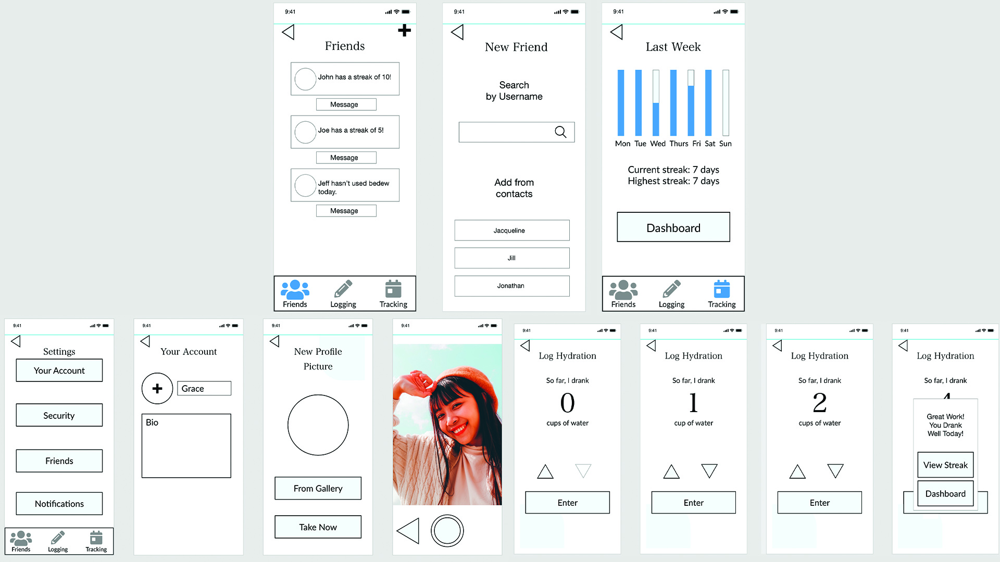

Summary
Bedew is an app that helps young adults drink a healthy amount of water by setting reminders, giving encouragement, and tracking hydration. Each day, the user would enter how much they drank and the app tells them to drink more or less. Notifications would be used to remind them throughout the day and good hydration is rewarded through daily streaks.
Problem
Many young adults either do not drink enough throughout the day or drink unhealthy fluids like sodas and juices. Solving this issue can seem like a daunting task and many are scared to even begin.
Solution
This app aims to solve this issue by giving the user encouragement in their hydration progress. As the user sees the chart of their improvement and their health streak, they will be incentivised to continue. They also have the option to share this with their friends, and would not want to let them down.
Target User
The target user is college-aged, female, and familiar with contemporary social media. They try to be as healthy as possible but they get discouraged when goals seem unattainable. One of the health issues is hydration, which can be hard to maintain. Every interface the userbase has contact with must be easy or understandable or they will get frustrated and give up.
Process
Research
I looked at "Water Tracker - Water Reminder," a self-help app with over one million downloads. This app utilizes a simple interface so as not to overbear the user as well as bar graphs to concisely and effectively communicate progress. It also rewards consistency with achievements. I incorporated the graph element and simple design and I rewarded consistency - with streaks instead of achievements. I also considered the article "Interaction design is more than just user flows and clicks" by Richard Yang, which taught that a user's exhaustion can slowly build up throughout the use of an interface. Each interaction takes a certain amount of physical and mental energy, so I planned out the flow of the app to minimize this.
User Interviews
In the user interviews, I asked about the demographic's goals in health or hobbies, their previous experience with self-help apps and improvement methods in general, and ideas for features that would help in the process. I learned that notifications would be very useful to remind the user of their goals. I also found out that goals should be broken down to be more manageable and users would quit the app if the interface was too difficult or complicated.
Low Fidelity Wireframes and User Flow
Visual Design
Prototype
The onboarding interface takes information from the user and determines what the best daily amount of water is. The process only gives one question at a time so it is not overwhelming and the user can see how far along in the process they are.
Throughout the day, the user takes a moment to record how much they drank. They get encouragement along the way as well as positive reinforcement when they meet their goals. At the end, they can see their streak of healthy drinking.
The user can take a new profile picture and adjust their account from the settings page. This page also allows many other adjustments.
Reflection
Challenges
One issue was explaining the logging mechanic without relying heavily on large amounts of text the user would most likely gloss over. I originally had a model in which the user would enter how much they drank at the end of the day, but they would need to remember what they drank. In the final version, the user enters information throughout the day. Another obstacle was deciding the most important data when tracking progress. There shouldn't be an overwhelming amount of information, but the user should know if they are meeting their goals or not. In the end, I showed a bar graph of the previous week's hydration in the tracking tab. This clearly and concisely shows the user the most important data.
Successes
The streak system, which is displayed to the user after they meet their daily goal, reminds them how much they have invested in the app and encourages them to keep going. They also have the ability to share their progress with their friends which leads to the psychological "rewards of the tribe," in which users feel connected with their friends. The app would effectively motivate its userbase to drink healthier.